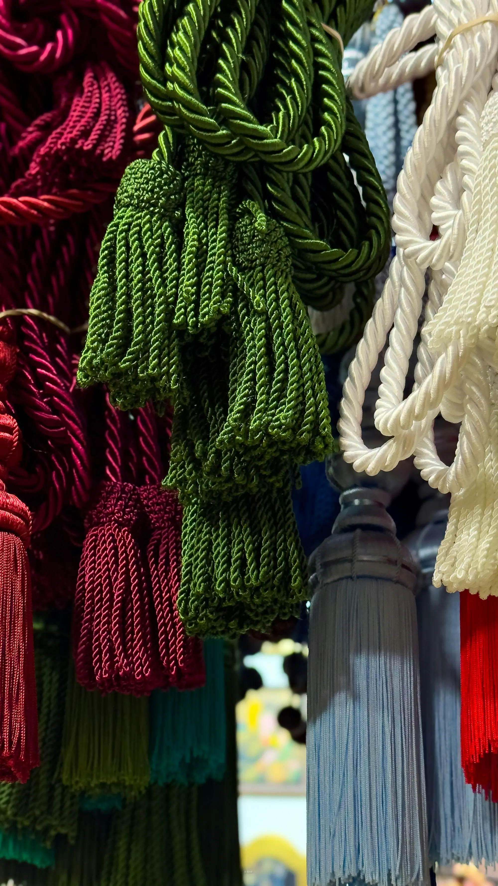

Nuestra Raíz
El comienzo de un sueño
Artesanías Ludys nació en el corazón de [Tu Ciudad/Región], con el firme propósito de preservar las técnicas ancestrales que han pasado de generación en generación.
Lo que comenzó como un pequeño taller personal, se convirtió en un espacio de resistencia cultural y amor por lo hecho a mano.

Nuestro Propósito
Más que objetos, son historias
Creemos que cada pieza tiene alma. No solo vendemos productos, compartimos la cosmovisión de nuestros artesanos y el respeto por los materiales que nos brinda la naturaleza.
Nuestra misión es llevar un pedazo de nuestra cultura a cada rincón del mundo, garantizando un comercio justo y sostenible.
